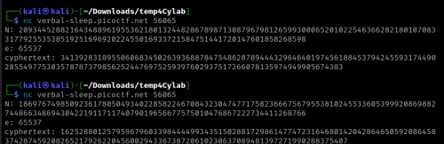
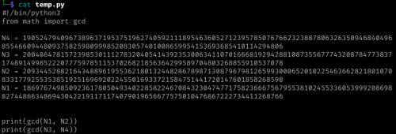

EVEN RSA CAN BE BROKEN???
- Provided with a flag encrypted with RSA
- Connected to provided host several times and gathered multiple N's:

- Created short python script to check if N uses the same primes at all:

- GCD resulted in 2 consistently
- Divided N by 2
- Got flag: picoCTF{tw0_1$_pr!m305af7255}